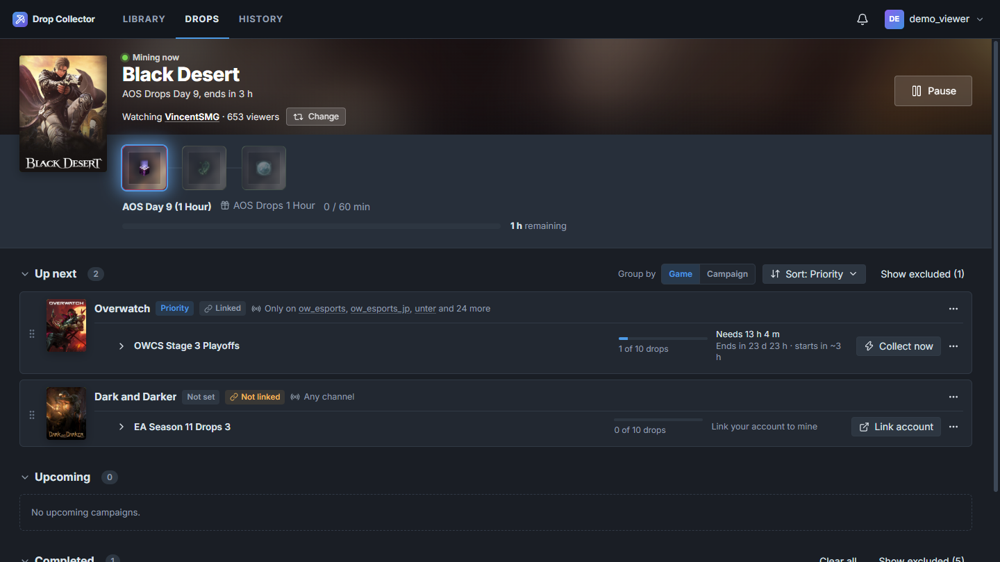

Mining
It watches for you
The app finds a live channel with drops enabled for your top campaign, watches it quietly in the background (no video, just enough for Twitch to count it) and claims each reward the moment it unlocks.
- Shows the game, the channel, the drop and how long is left
- Pick a different channel any time, or let it choose
- Pauses itself when you go offline or the computer sleeps
- A notification when something is claimed
